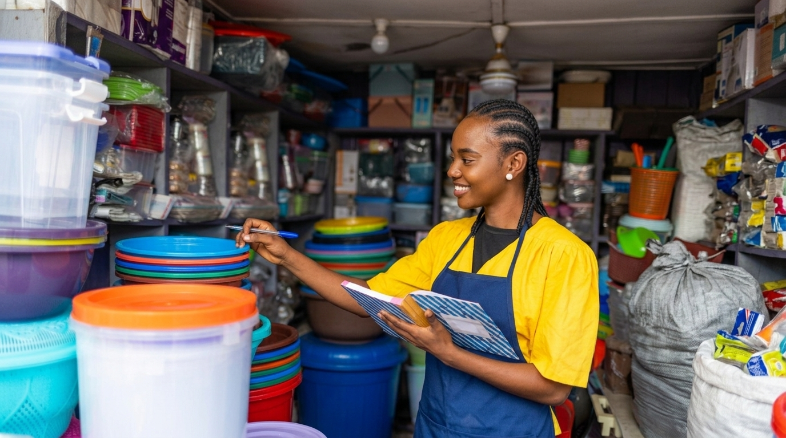

01
Organização
Quando controlar o stock se torna um desafio
Numa pequena loja, acompanhar os produtos disponíveis através de anotações manuais pode tornar-se difícil, sobretudo quando há muitas vendas durante o dia.
Ler história